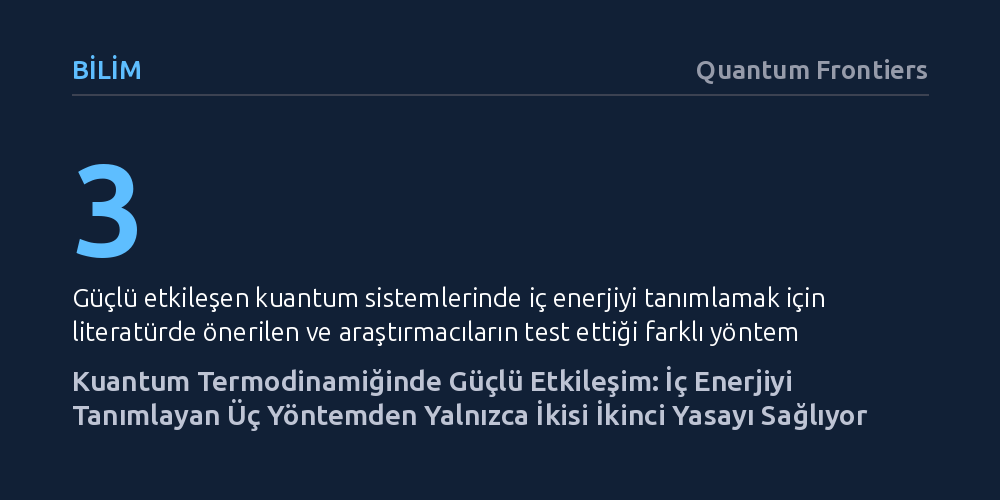

BILIM · Quantum Frontiers · 2026-10-12
Çevreleriyle güçlü etkileşen kuantum sistemlerinde iç enerjiyi paylaştıran üç kuramsal tanımdan yalnızca ikisinin termodinamiğin ikinci yasasıyla tutarlı kaldığı gösterildi. Bu tanımların klasik fizikte örtüşüp kuantumda ayrışmasının temel sebebi ise ölçümlerin birbiriyle komüte etmemesi.
Çevreyle kuvvetli bağ kuran mikro sistemlerde enerjinin kime ait olduğunu keyfi biçimde bölemeyeceğimizi, doğru tanımı yalnızca doğanın geri döndürülemezlik ilkesinin belirleyebileceğini ortaya koyuyor.

Kahvaltı masasında haşlanmış bir yumurtayı kestiğinizde sarısı ve beyazı net bir sınırla birbirinden ayrılır; neyin nereye ait olduğunu hemen söyleyebilirsiniz. Ancak aynı yumurtaları bir kaba kırıp çırptığınızda ve tavaya döktüğünüzde ortaya çıkan omlet artık ne yalnızca sarıdır ne de beyaz. Tat, doku ve kıvam gibi özellikler artık tek tek bileşenlere değil, karışımın bütününe ait hale gelir. Fizikte de birbiriyle çok kuvvetli etkileşen parçalarla karşılaştığımızda temel soru tam olarak budur: İki varlık birbirine bu kadar kenetlendiğinde, hangi özellikler parçalara, hangileri yalnızca bütüne aittir?
Makro dünyada, örneğin bir elmayı masaya koyduğumuzda, elmanın çevresiyle etkileşimi yalnızca yüzeyinde gerçekleşir; kütlesinin ve enerjisinin neredeyse tamamı iç hacminde saklıdır. Cisim büyüdükçe yüzeyin hacme oranı küçülür ve aradaki etkileşim enerjisini yok saymak fiziğin genel hesaplarında ciddi bir hata yaratmaz. Fakat atomik ve kuantum ölçeğine indiğimizde bu rahat yaklaşım çöker. Minik bir atomu çevreleyen ortamla baş başa bıraktığınızda, sistemin toplam enerjisi atomdan, çevreden ve ikisi arasındaki etkileşimden oluşur. Etkileşim zayıfken bu bağı görmezden gelmek kolaydır; ancak bağ kuvvetlendiğinde paylaşılan enerji o kadar büyür ki enerjinin ne kadarının atoma, ne kadarının çevreye ait olduğunu söylemek kuramsal bir düğüme dönüşür.
Fizikte tanımlar yalnızca nesnelere isim takmaya yaramaz; neyin sistem sayılacağını, hangi büyüklüklerin ölçülebileceğini ve kuramın deneyle nasıl buluşacağını belirler. Birbiriyle güçlü etkileşim halindeki bir kuantum sisteminin iç enerjisini hesaplamak isteyen fizikçiler, literatürde üç farklı matematiksel yaklaşımla karşılaşır. İlk yöntem, sistem ve çevrenin oluşturduğu bütünden çevrenin aynı sıcaklıkta tek başına sahip olacağı enerjiyi çıkarmayı ve kalan tüm etkileşimi sisteme yazmayı önerir. İkinci yöntem, denge durumundaki etkileşimin sisteme yansımasını özetleyen ortalama kuvvet Hamiltonyeni adındaki etkin bir araçtan yararlanır. Üçüncü yöntem ise bu ortalama kuvvet Hamiltonyeninin sıcaklığa olan bağımlılığını da doğrudan hesaba katar.
Bu üç tanımın geçerliliğini test etmek için araştırmacılar 'ani söndürme' (sudden quench) adı verilen kuramsal bir deney kurguladılar. Bu işlemde sistemin bir parametresi—örneğin sisteme uygulanan manyetik alan veya çevreyle olan etkileşim gücü—göz açıp kapayıncaya kadar, sistemin ve çevrenin durumunun anında değişmesine fırsat kalmayacak hızda değiştirilir. Bu ani müdahale sırasında dışarıdan yapılan etki sisteme aktarılan iş olarak adlandırılır. Ani müdahalenin ardından sistem kendi haline bırakılır; yeni şartlar altında çevresiyle enerji alışverişi yaparak gevşer ve bu aşamadaki değişim de ısı olarak kaydedilir. Tıpkı omleti pişirirken önce yumurtaları hızla çırpıp (iş), ardından sıcak tavada pişmeye bırakmak (ısı) gibi iki aşamalı net bir süreç işletilir.
Termodinamiğin birinci yasası enerjinin korunumunu ifade eder; iç enerjideki herhangi bir değişimin iş ve ısının toplamına eşit olmasını şart koşar. Ele alınan üç iç enerji tanımının her biri kendi iş ve ısı formüllerini beraberinde getirir. Sevindirici gibi görünen ilk sonuç, her üç tanımın da birinci yasayı kusursuz biçimde sağlamasıdır. Yani kağıt üzerinde enerji hiçbirinde kaybolmaz; iş ile ısının toplamı iç enerji değişimini tam olarak verir. Fakat birinci yasa bir sürecin hangi yönde ilerleyeceğini söyleyemez; enerjinin korunduğu bir senaryoda masada soğuyan bir omletin kendiliğinden tekrar çiğ yumurtaya dönüşüp kabuğuna girmesini engelleyen şey birinci yasa değil, termodinamiğin ikinci yasasıdır.
Araştırmacılar bu nedenle üç tanımı daha katı bir sınavdan geçirdi: Geri döndürülemez süreçlerde fazladan harcanan eforu gösteren dağılan iş (dissipated work) miktarının negatif olamayacağını söyleyen ikinci yasa testi. İşte üç tanım burada birbirinden keskin biçimde ayrıldı. İlk iki tanım ikinci yasayla tam bir uyum içinde kalırken, ortalama kuvvet Hamiltonyeninin sıcaklık türevini hesaba katan üçüncü tanım fiziksel olarak imkansız olan negatif dağılan iş değerleri üretti. Bu durum kuantum sisteminin termodinamik yasalarını çiğnediği anlamına gelmiyordu; aksine, üçüncü tanımın enerjiyi ve işi fiziksel süreçlerle çelişecek biçimde paylaştırdığını ve bu nedenle tutarsız olduğunu gösteriyordu.
Bu araştırmanın ortaya çıkardığı en çarpıcı kuramsal sonuç, tanımların klasik fizikte tamamen aynı sonucu verirken kuantum dünyasında neden yollarını ayırdığı sorusunda gizlidir. Klasik fizikte iki farklı fiziksel özellik aynı anda tam bir kesinlikle ölçülebilirken, kuantum mekaniğinde gözlemlenebilir büyüklükler her zaman birbiriyle komüte etmez, yani işlem sırası sonucu değiştirir. Sistemin kendi enerjisi ile etkileşim enerjisi aynı anda kesin olarak ölçülemediğinde, yapılan işi hesaplayan formüller de birbirinden farklı değerler üretmeye başlar.
Araştırma ekibi, sistemin Hamiltonyeni ile etkileşim Hamiltonyeninin birbiriyle komüte ettiği—yani kuantum özelliklerin klasik sınıra yaklaştığı—özel durumu incelediğinde çarpıcı bir manzarayla karşılaştı: Bu sınırda üç tanımın tamamı birbiriyle birebir aynı iş değerini veriyor ve ikinci yasayı sağlıyordu. Buradan çıkan temel ders şudur: Tanımların ayrışmasına tek başına güçlü etkileşim değil, kuantum mekaniğinin kendine has sıra tanımazlığı yol açmaktadır. Haşlanmış yumurtadan omlete uzanan o geniş mutfak yelpazesi gibi, kuantum sistemleri de çevreleriyle neredeyse bağımsız olmaktan tamamen iç içe geçmeye kadar uzanan bir tayfta var olur; ancak bu karmaşık tayfta bile fiziğin temel yön okuna sadık kalan tanımlar ayakta kalır.